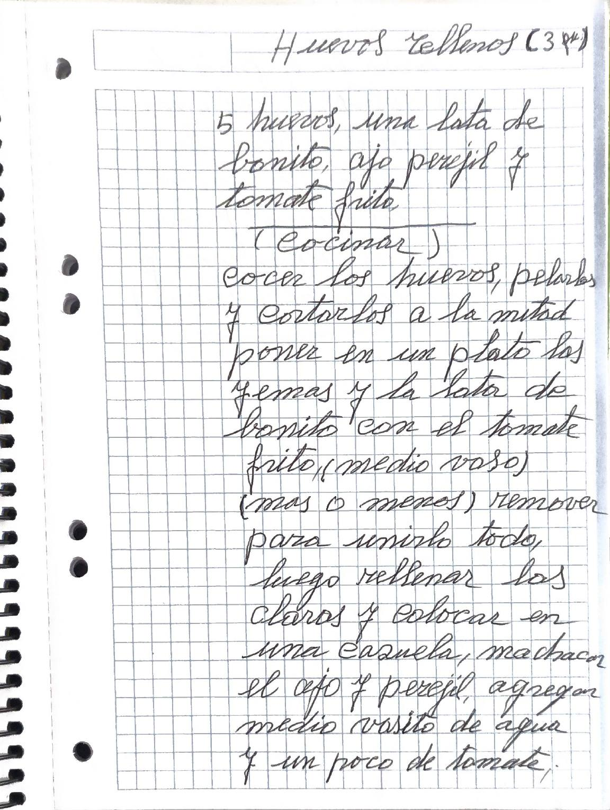
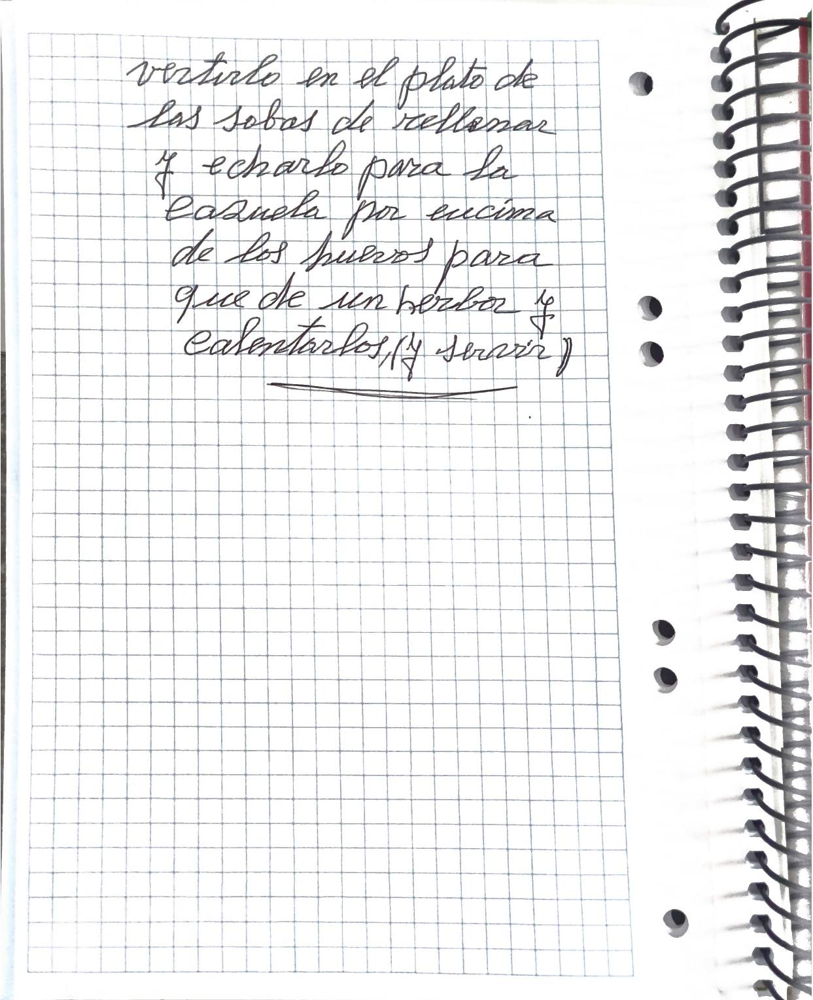
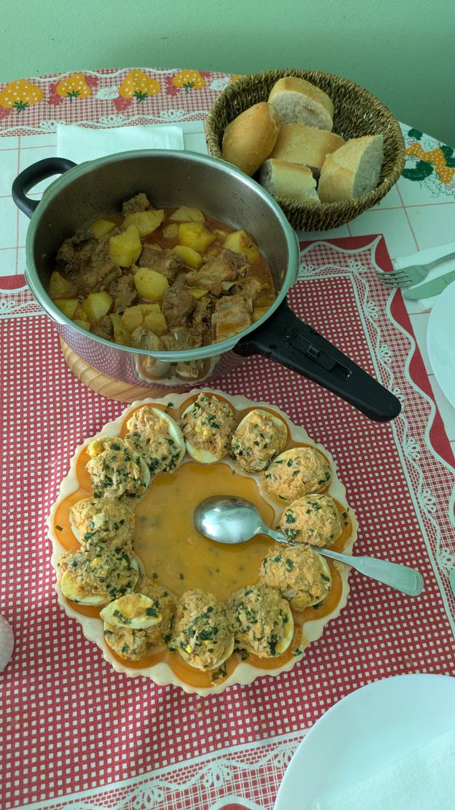

Huevos rellenos

Versión editada para cocinar. Lo que ella escribió, palabra por palabra, está en «Cuaderno».
Ingredientes
Preparación
- Cocer los huevos, pelarlos y cortarlos por la mitad.
- Poner en un plato las yemas y la lata de bonito con el tomate frito (medio vaso, más o menos). Remover para unirlo todo.
- Rellenar las claras y colocarlas en una cazuela.
- Machacar el ajo y el perejil, y agregar medio vasito de agua y un poco de tomate.
- Verterlo en el plato de las sobras de rellenar y echarlo a la cazuela por encima de los huevos, para que dé un hervor y se calienten.
- Y servir.
Avisos y dudas
- No dice cuánto ajo ni cuánto perejil.
- «rellenar los claros»: en la versión editada lo he puesto como «las claras».
Tal como lo escribió


Transcripción fiel, con su ortografía. Lo que va entre corchetes son aclaraciones de la transcripción.
Huevos rellenos (3 p.)
5 huevos, una lata de bonito, ajo perejil y tomate frito
(cocinar)
cocer los huevos, pelarlos y cortarlos a la mitad poner en un plato las yemas y la lata de bonito con el tomate frito, (medio vaso) (mas o menos) remover para unirlo todo, luego rellenar los claros y colocar en una cazuela, machacar el ajo y perejil, agregar medio vasito de agua y un poco de tomate, verterlo en el plato de las sobras de rellenar y echarlo para la cazuela por encima de los huevos para que de un herbor y calentarlos, (y servir)
En la cocina
